Professional Traders vs Retail Traders 102
Alpha vs absolute return, the Sharpe ratio, and how the industry is engineered for retail to fail
Professionals don't chase alpha against a falling benchmark — they chase absolute return earned at a high Sharpe, run a repeatable Long/Short process on a 20-60 day horizon, and step out of the way of an industry whose entire revenue model is built on retail losing.
The gist
- Beta = the market return; Alpha = your return minus the market return. Positive alpha can still mean you LOST money (market -15%, you -5% = +10% alpha but a real loss), so alpha is a poor measure for a Long/Short trader — absolute return is what matters.
- Sharpe Ratio (Annualized Return / Annualized Standard Deviation) is the core metric. Losers are negative (75-95% of retail); decent retail 0.1-1; all good traders >1; professional humans >1.5, capping ~2-2.2; top algos 1.5-3 but with a ~6-month shelf life.
- Two challenges: first make money (positive Sharpe), then make a higher % return than the risk you take. The goal is smoothed returns — the same profit with far less volatility.
- The professional process is a 4-stage systematic loop: Fundamentals (most important) then Timing, then Trade Structure then Risk Management (PRM & RRM), run as a Long/Short book of 8-12 low-correlation ideas on a 20-60 day / 1-3 month horizon.
- Broker Revenue = (Spread + Commission) + (Financing 'Turn' + OTC Gain) + Data. Three retail-broker incentives all create a Conflict of Interest: they profit when you trade bigger, more often, short-term — and when you lose.
- The Inversion Narrative: Smart Money requires Dumb Money to exist. Retail loses because it does the opposite of what professionals do, doing exactly what participants with a conflict of interest want.
Alpha vs absolute return
- The market return is Beta; an excess return above the market from your portfolio is Alpha. Alpha = your return - market return.
- Market +15%, you +25% -> alpha +10%. Market +15%, you +5% -> alpha -10%. Market -15%, you -5% -> alpha +10%. Market -15%, you -25% -> alpha -10%.
- PROBLEM: market -15% and you -5% is 'positive alpha' but you still LOST money. Positive alpha is not the same as making money.
- Alpha is VERY important for a LONG ONLY mandate; it is not so important for a Long/Short mandate — which is why professionals tend toward Long/Short, so they can make money when the market falls.
Professionals care about absolute return (did you actually make money?), not about beating a benchmark that itself went down. Beating a -15% market by returning -5% still empties your account.
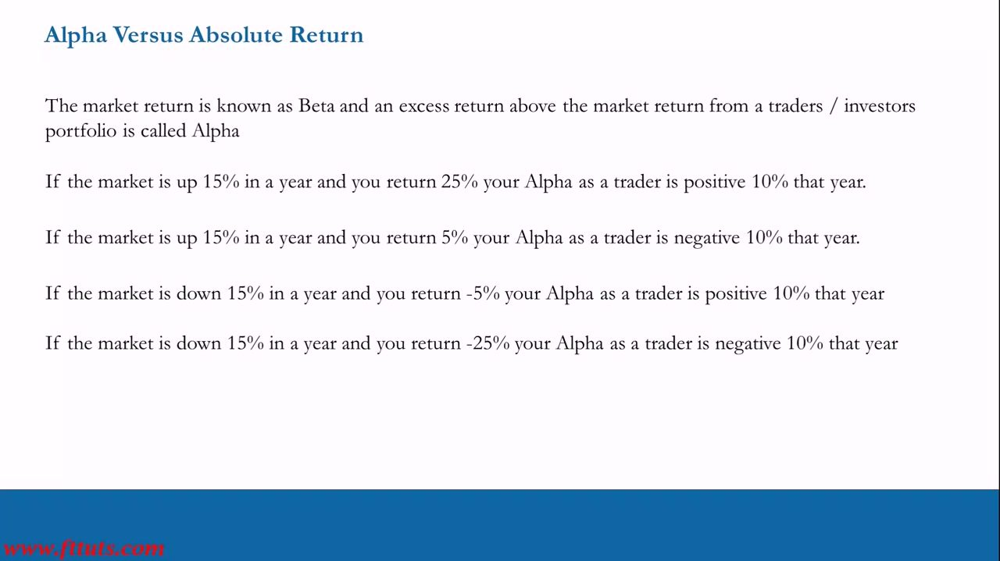
Why Long/Short beats Long Only over a full cycle
- Long Only example: market +15% every year for 5 years -> index 100 x 1.15^5 = 201 (you doubled your money). Then the market drops 50% -> 201 x (1 - 0.50) = 100.50: you have made NOTHING over 6 years.
- Long/Short example: underperform the market by 3%/yr for 5 up years (12% vs 15%) but make +40% in year 6 when the market is -50% -> (100 x 1.12^5) x 1.40 = 247.
- That is (247 - 100) / 100 = 1.47, i.e. +147% over 6 years — outperforming Long Only by 147%.
- For 5 years 'idiots' read your 'relative' underperformance in the FT and Wall Street Journal and think you're no good — the baseless hubris of Long Only relative measures.
- In a rising market you should go for bigger returns and take bigger risk than market risk. Alpha is a poor measure of a Long/Short trader's ability — it's NOT that important.
A Long Only investor is fully exposed to the drawdown that erases years of gains. Long/Short aims to make money regardless of direction, which is what actually compounds through a full cycle.
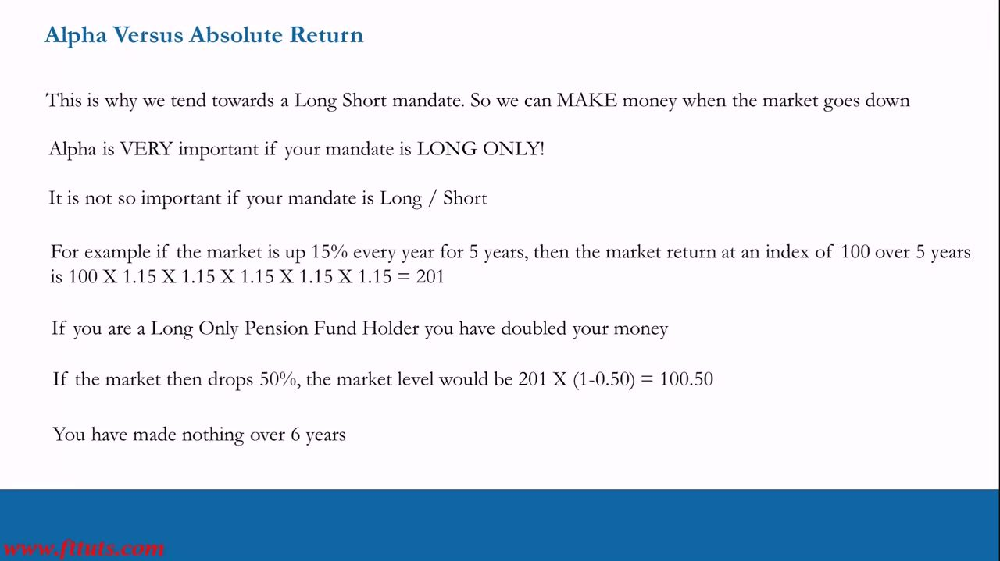
The Sharpe Ratio and its benchmarks
- Sharpe Ratio measures how much return a trader gets for the risk (volatility) they take. Simplified Sharpe = Annualized Return / Annualized Standard Deviation of the portfolio.
- Sharpe of 1: market risk 15%, Long Only, return 15% — made money AND took 15% risk to return 15%.
- 2X Traders: Trader 1 = 30% annualized SD, 20% return -> Sharpe 20/30 = 0.66. Trader 2 = 13% SD, 19% return -> Sharpe 19/13 = 1.46. Trader 2 is clearly the better trader despite the lower absolute return.
- Anyone who just loses money has a NEGATIVE Sharpe — that is 75%-95% of retail traders (Long/Short CFDs outside the US, Equities/Options inside the US).
- Decent retail who make money: Sharpe 0.1-1 (inefficient — take too much risk for the return). ALL good traders: Sharpe >1. Professional (human) traders: >1.5, capping ~2-2.2 over the very long term.
- Amazing algos trading 20,000 times a second: Sharpe 1.5-3 — but most algos lose money, and the high-Sharpe ones have a ~6-month shelf life before they get 'out machined'.
The first challenge for every retail trader is simply to make money and get a positive Sharpe (0-1). The second is to earn a higher % return than the risk taken — in any market direction.
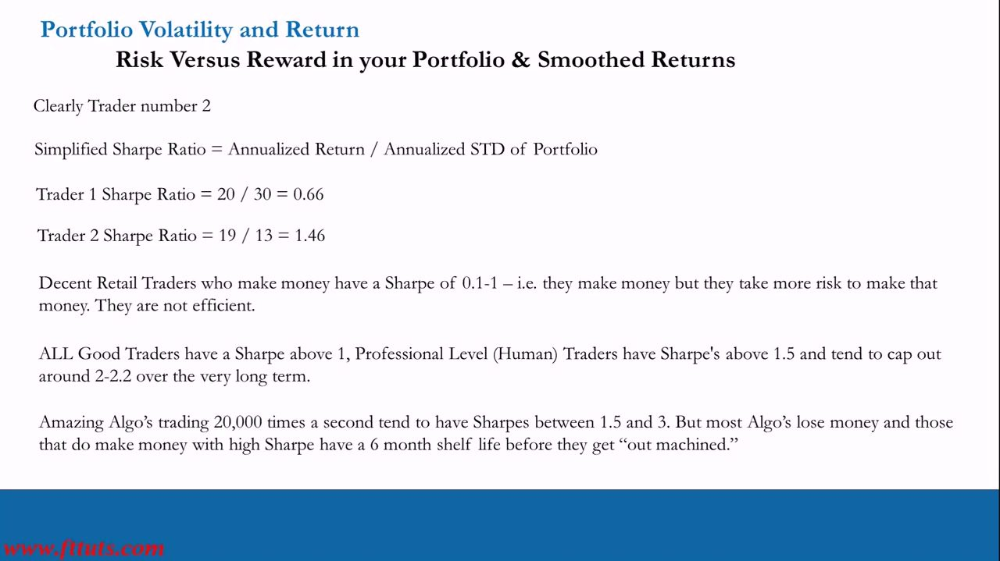
Smoothed returns: same profit, less volatility
- We would all like to get paid daily with no risk. In reality you must seek out RISK to get volatility and therefore get OPPORTUNITY.
- Two equity curves reaching a similar cumulative dollar profit: Option A is volatile and jagged; Option B is a smooth, near-straight upward line.
- The professional prefers Option B — the same end profit achieved with far less volatility, i.e. a much higher Sharpe.
Smoothed returns are the visible signature of a high-Sharpe, well-risk-managed book: end at the same place, but without the stomach-churning swings that blow retail accounts up along the way.
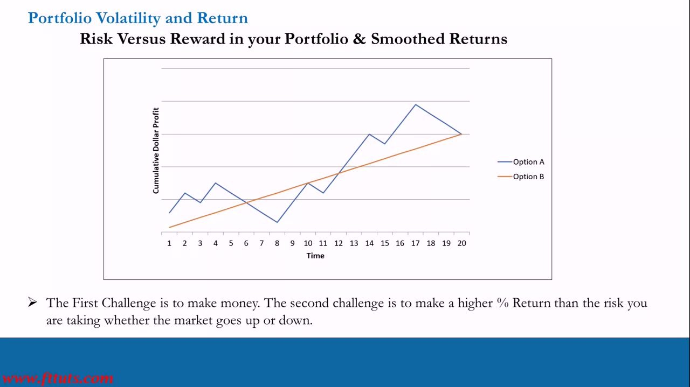
The Pro Trader Systematic Process
- A 4-stage process split into THEORY and IMPLEMENTATION, combining a Quantitative and a Qualitative Process. Flow: Fundamentals -> Timing -> Trade Structure -> Risk Management.
- Fundamentals (MOST IMPORTANT): if you are fundamentally bullish, never short a stock just because the chart looks bad, and vice versa.
- Timing (Technicals, only basics required): charts do NOT generate trade ideas — they are backwards looking. They help only with timing and a small amount of risk management.
- Trade Structure (Catalysts): identify catalysts additional to earnings announcements — go through the Options Calendar and work backwards.
- Risk Management (Portfolio): Pre-emptive (PRM) and Re-active (RRM). Build a portfolio of low-correlation positions with differing trade structures and solid execution — 8-12 ideas provides diversity. STAY IN MOTION!
This is the Long/Short Portfolio Management process on a 20-60 day time horizon. Fundamentals dominate the idea; technicals only time it; catalysts structure it; risk management makes the returns repeatable.
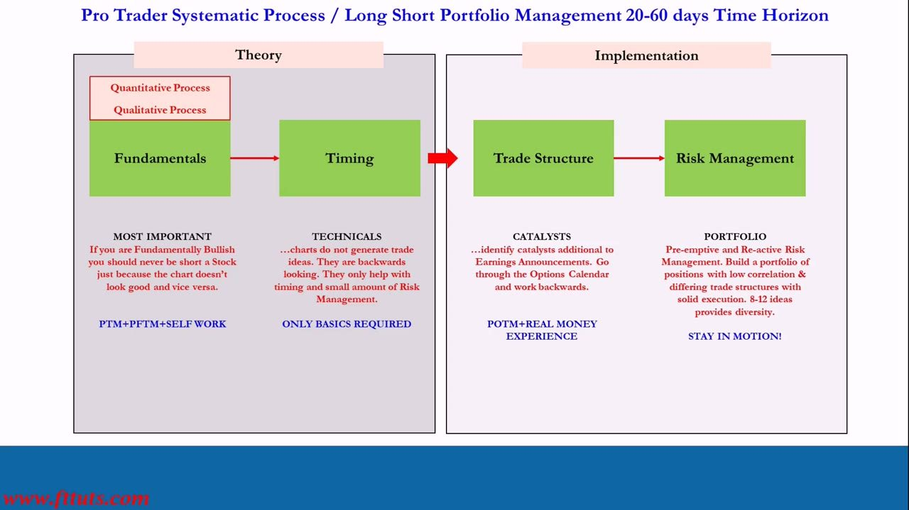
How the industry makes its money
- Broker Revenue = (Spread + Commission) + (Financing 'Turn' + OTC Gain) + (Data).
- Spread = marking the spread wider than the underlying. Commission = a % added on to the spread. Data = selling your order flow to hedge funds at a per-trade rate.
- Financing Turn = the % gap between what the broker borrows at from creditors and what it charges the leveraged client. OTC Gain = taking the other side of losing clients' trades.
- Spread and Commission are well publicised; almost nobody understands the broker's OTC, Financing Turn and Data revenues.
- Leverage / margin: FOREX is typically 3.33% margin (a $100,000 position needs $3,330 variable margin = 30x leverage; lose 3.33% and you're wiped out). Indices, Equities, Commodities and ETFs are typically 20% margin = 5x leverage.
If the only revenues were spread and commission, the broker still makes more the more (and bigger) you trade — but the real money is in the financing turn, taking the other side of losers (OTC), and selling your order flow.
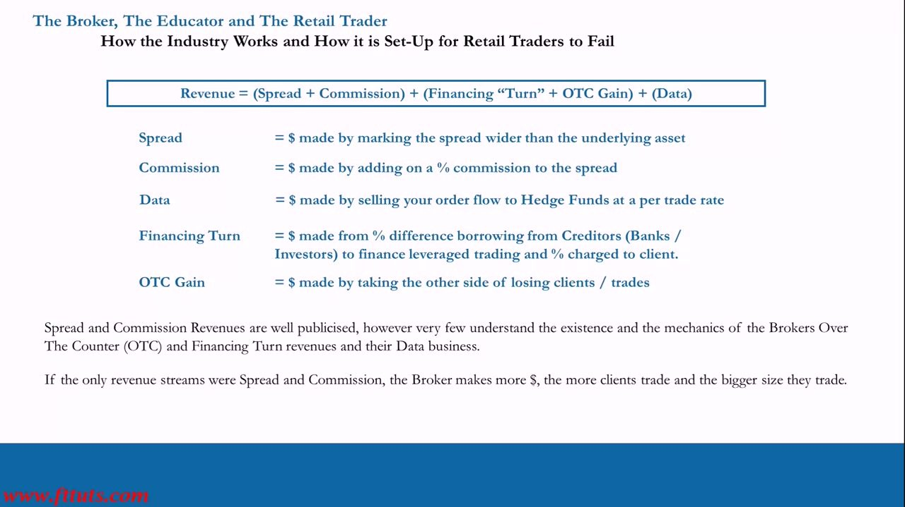
'Commission free' isn't free
- Commission itself isn't the problem unless it's high — the problem is HOW retail trade. Trading statistics have not improved since the 90s.
- A popular US 'commission free' platform charges 5% annual margin lending = 500 bps / 365 = 1.3698 bps/day ~ $13.70 per night on $100,000 borrowed.
- Borrow $100,000 on a $100,000 deposit every night and weekend and you lose -5% ($5,000) in borrowing fees.
- Add ~2% purchasing-power loss to inflation: $100,000 - $5,000 - $2,000 = $93,000 — worse than Chase paying 2 bps over 6 months. The financing pushes you into Day Trading (close out before the close to avoid overnight margin).
- The Data business: they sell client order flow to hedge funds, knowing 95%-99% of accounts will lose. You are the product — the data is valuable to whoever takes the other side of the dumb money.
- Retail Broker Incentive 3 = use the 'trade commission free' narrative to lure clients away from commission brokers, set up overnight financing to encourage day trading and YOLO options trades, then sell the order flow and call it a 'Data Business'. Conflict of Interest!
The three retail-broker incentives — Volume & Size (1), Third-Party Financing with a Turn plus taking the other side (2), and Commission-Free / Data (3) — each embed a conflict of interest. If they don't get you on commission, they get you somewhere else.
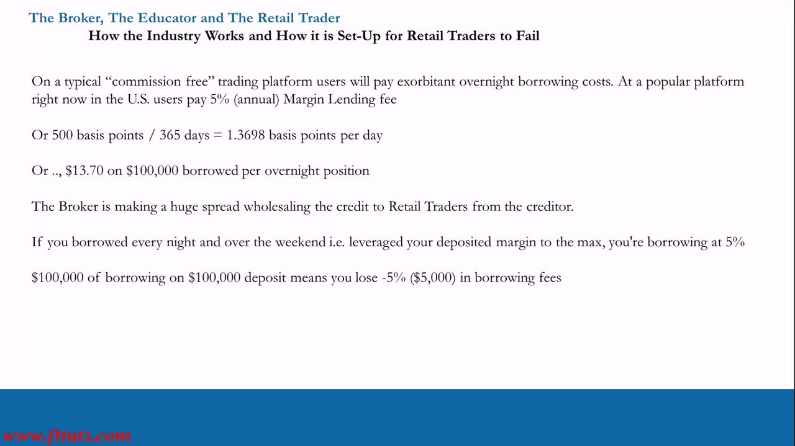
The Inversion Narrative
- Smart Money (professionals): understand how markets work, know Conflict of Interest exists, avoid trading the way COI participants want, and do everything the opposite way to retail.
- Dumb Money (retail): believe everything they're told, rely on infrastructure built to benefit the provider (not them), trade as instructed, and do everything the opposite way to professionals.
- Smart Money requires Dumb Money to exist: Smart Money predicts the future, Dumb Money reacts to the present, and wealth is transferred. The infrastructure owners need the status quo to get paid.
- The biggest payers of exchange fees are Investment Banks, Hedge Funds and Pension Funds — this is Wall Street, and they all work together.
- Why lend a stranger up to 33x their deposit? Because brokers have an 80%/90%/95% win ratio on losing client trades — they're incentivised for you to lose, in the biggest size possible, with little or no risk.
- US context: CFDs were banned in the US in 2010; retail uses Options (equities) and Futures (index/FX/commodities). Cash equity leverage is only 2x (50% overnight margin). The tradable futures set is small (~60 contracts vs ~2,500 stocks), which is why options have surged in the last 6-7 years.
Brokers, and the 'educators' they contract, are incentivised to make you believe in short-term trading and to trade as frequently and as large as possible — that maximises Spread + Commission, Financing Turn, and Data revenue while their OTC book takes the other side.
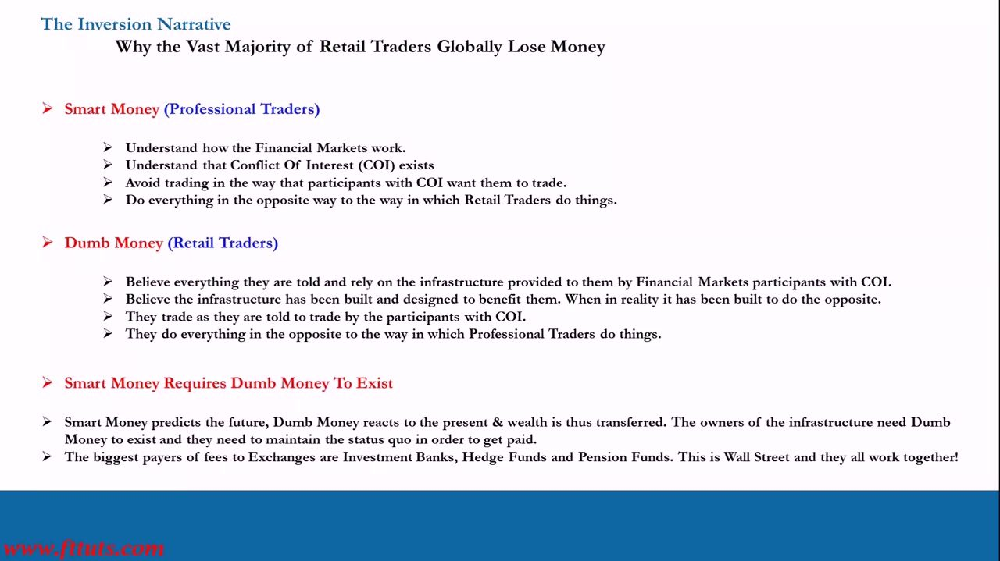
Charlatan educators and their red flags
- ITPM forces brokerages globally to write Zero Percent on all IB (Introducing Broker) agreements to eliminate the conflict of interest, and publishes them at itpm.com/trading-accounts/ — a template to demand from any 'educator'.
- Red flags (myth = what it really means): 'Day Trading always works' = guaranteed daily volume for broker and educator.
- 'Better to have no overnight risk, exit before the close' = 2x spread + commission, and the educator knows nothing about risk/hedging.
- 'Make a Monthly Income from Trading' = guarantees the broker and educator a monthly income from your churn.
- 'Trading is easy, just follow these lines on the chart' and 'Psychology is the most important thing' and 'All you need is Risk Management' = telling dumb money what it wants to hear; the educator has no systematic process.
- Lifestyle marketing ('the lifestyle you deserve', 'one day you'll own a car like me') = distraction that taps your desperation. When Desperation meets Conflict of Interest, only bad things happen.
Copy trading is never sustainable — when it stops working it means the entity you copied blew up, so you did too. You have to learn to do it yourself: right info + mentors + self-learning + self-determination — not follow lines on a chart.
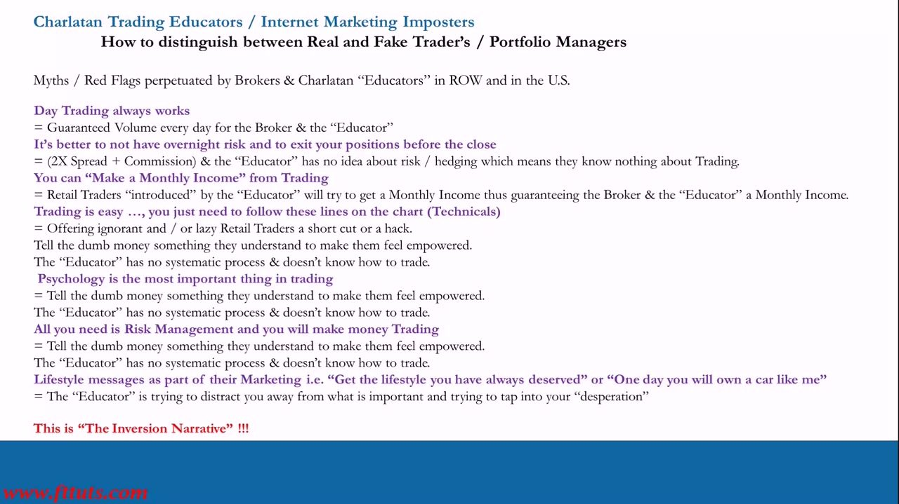
The Time Horizon Spectrum
- A timeline in Days (1, 5, 20, 60, 120, 250, 750, 1250) mapping holding period to trader type.
- Trading (~1-5 days): shortest term — where Retail Short-Term Traders and Algos operate (and compete, and lose).
- L/S PM, Long/Short Portfolio Manager (~20-60 days): the professional sweet spot. Grey Area (~60-120 days): transition. Investor (~120-1250+ days): long term — Retail, Income and Value investors.
- The ~20-60 day L/S PM zone is the 'Volatility & learning Sweet Spot for Retail Traders' — it combines the best disciplines of trading and investing.
- Retail should aim for the ~20-60 day Long/Short horizon, NOT ultra-short-term day trading where retail and algos compete and lose.
The horizon is deliberately chosen away from the 1-5 day zone (where you fight PhD rocket scientists and algos) and away from the multi-year investment zone (where you wait 3-5 years to find out if you were right).
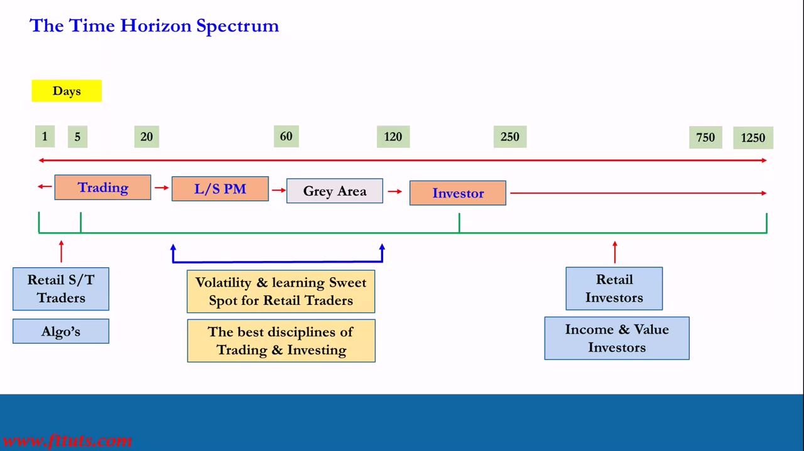
What constitutes a trade idea
- Day Trades: scalping order flow, minute-to-minute candlesticks, TA & PA indicators (100%), very short-term news flow — i.e. noise.
- Investment: 3-5 years on fundamentals, Growth or Value — but you must sit and wait 3-5 years to learn if you're right or wrong.
- YOLO Retail Trades: short-term (1 day to 1 week) or investments fully subverted to a narrative and 'all in'.
- Long/Short Portfolio, 1-3 Months (the professional trade idea) = Fundamentals (80%) + Technicals (10%) + Price Action (10%) + Catalysts (1-3 Months) + Trade Structuring (1-3 Months) + Risk Management (PRM & RRM).
- Conclusion: understand the industry (be Smart Money), understand Volatility first, then target the Risk and Reward available with a robust, repeatable systematic process to get consistent risk-adjusted returns (Sharpe) — building Long/Short 1-3 Month portfolios.
This composition — fundamentals-led, technicals and price action only for timing, catalysts and structuring to shape the trade, PRM & RRM to manage it — is exactly what ITPM students learn in the PTM and POTM.
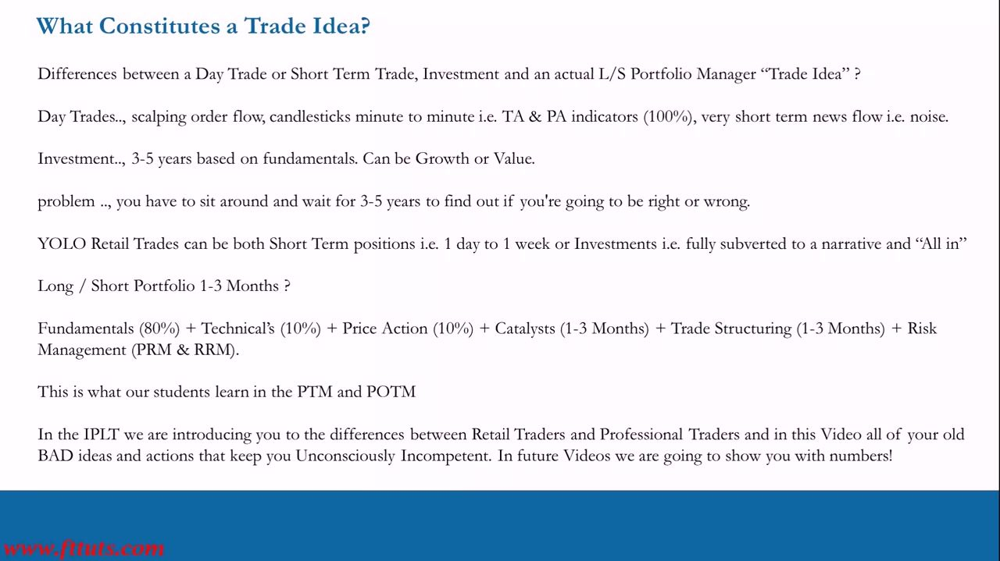
Glossary
- BetaThe market return.
- AlphaThe excess return above the market return: Alpha = your return - market return. Positive alpha can still mean you lost money if the market fell.
- Absolute returnWhether you actually made money, independent of any benchmark — what matters most for a Long/Short trader.
- Sharpe RatioRisk-adjusted return. Simplified Sharpe = Annualized Return / Annualized Standard Deviation of the portfolio. Losers negative; decent retail 0.1-1; good >1; pro humans >1.5 (cap ~2-2.2); top algos 1.5-3.
- Smoothed returnsReaching the same cumulative profit with far less volatility — the professional's preference and a high-Sharpe signature.
- PRM & RRMPre-emptive Risk Management (structuring risk at entry: sizing, structure, correlation) and Re-active Risk Management (managing risk as the position and market evolve).
- Broker Revenue(Spread + Commission) + (Financing 'Turn' + OTC Gain) + (Data) — the five ways a retail broker makes money, most of them hidden.
- OTC GainMoney the broker makes by taking the other side of losing clients' trades.
- Financing TurnThe % difference between what the broker borrows at from creditors and what it charges the leveraged client.
- The Inversion NarrativeThe set of ideas brokers and charlatan educators push (day trade, no overnight risk, monthly income, follow the chart) that make retail do the opposite of professionals and lose. Smart Money requires Dumb Money to exist.
- L/S PM horizonThe ~20-60 day / 1-3 month Long/Short Portfolio Management holding period — the volatility and learning sweet spot for retail traders.